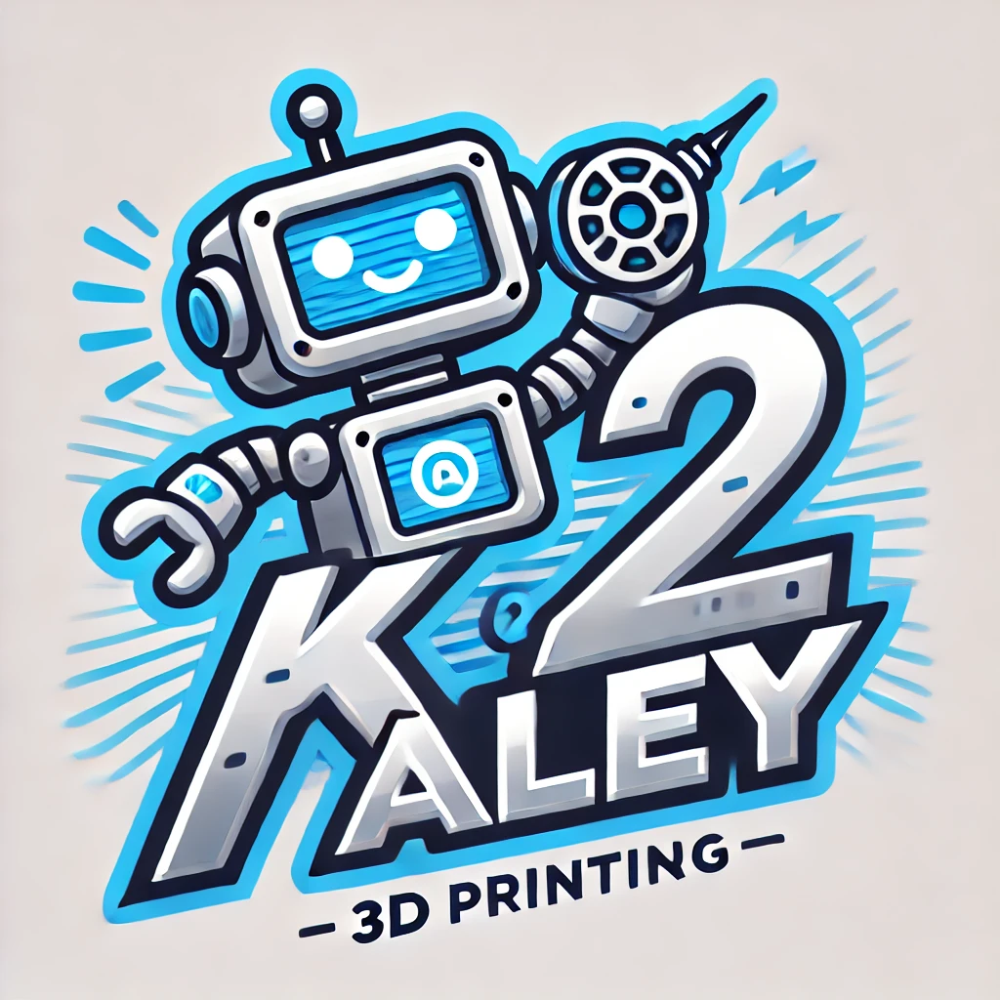
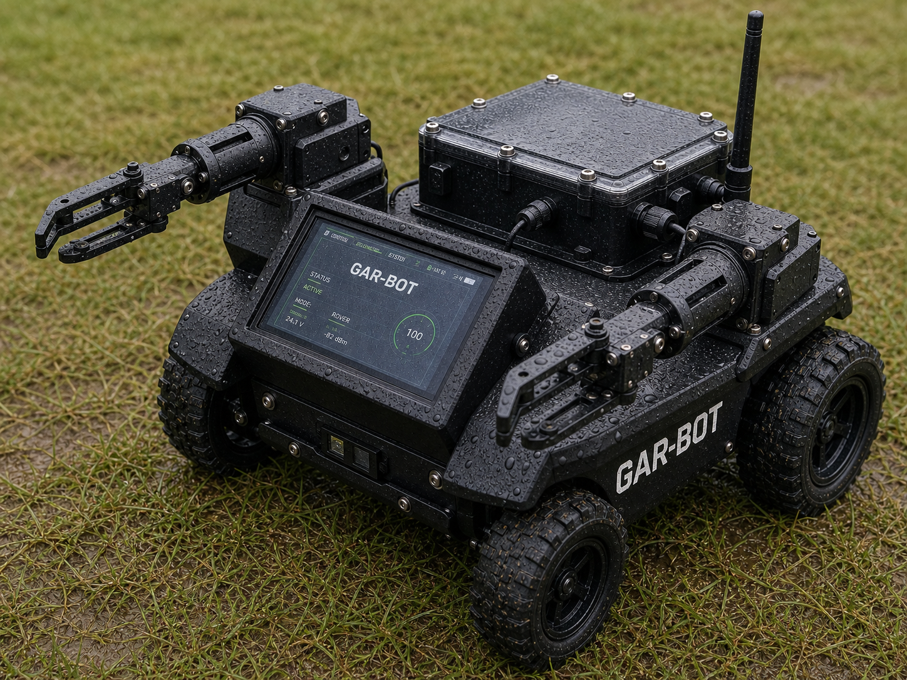
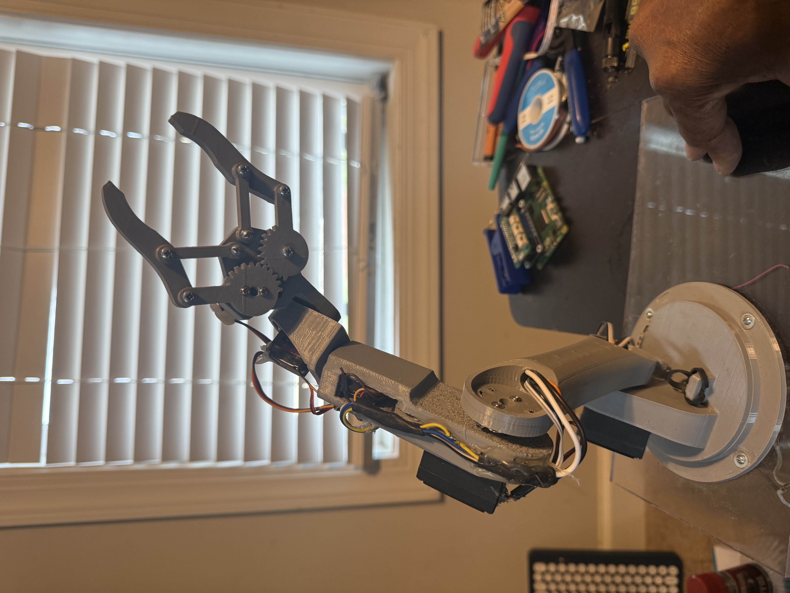

Diagnose
Organized checks narrow machine problems before parts or time are wasted.

K2Aley GAR-BOT
Guided Automation and Repair Bot
A K2Aley product concept for robot build documentation, 3D printer tune-ups, diagnostics, repair steps, and maintenance records.
GAR-BOT Console
Modules
Organized checks narrow machine problems before parts or time are wasted.
Repair and calibration steps stay clear, repeatable, and easy to follow.
Maintenance notes, tune-up values, and service history stay connected to the machine.
Docs, links, images, and files stay gathered in a build-ready structure.

Operating Flow
GAR-BOT applies the same system to a robot build, 3D printer service call, or shop maintenance routine: see the issue, follow the checks, document the result.